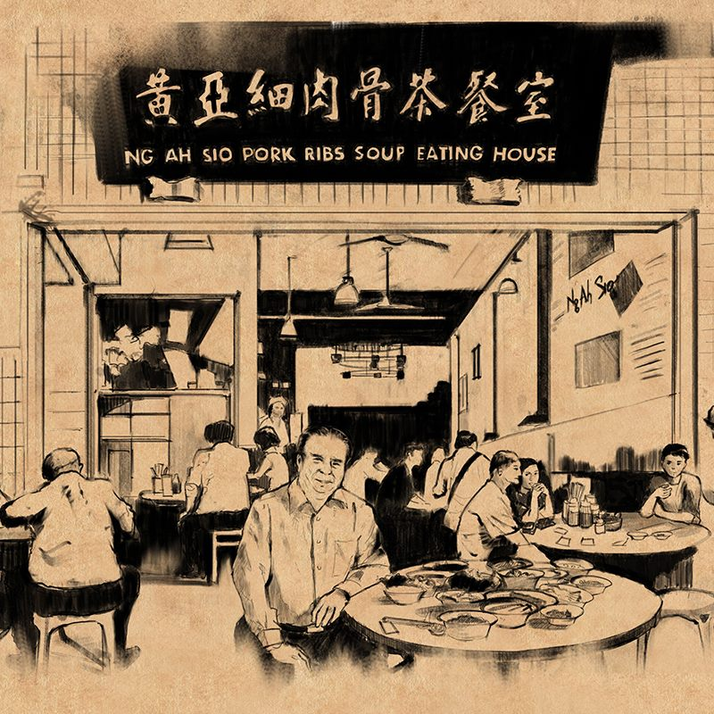
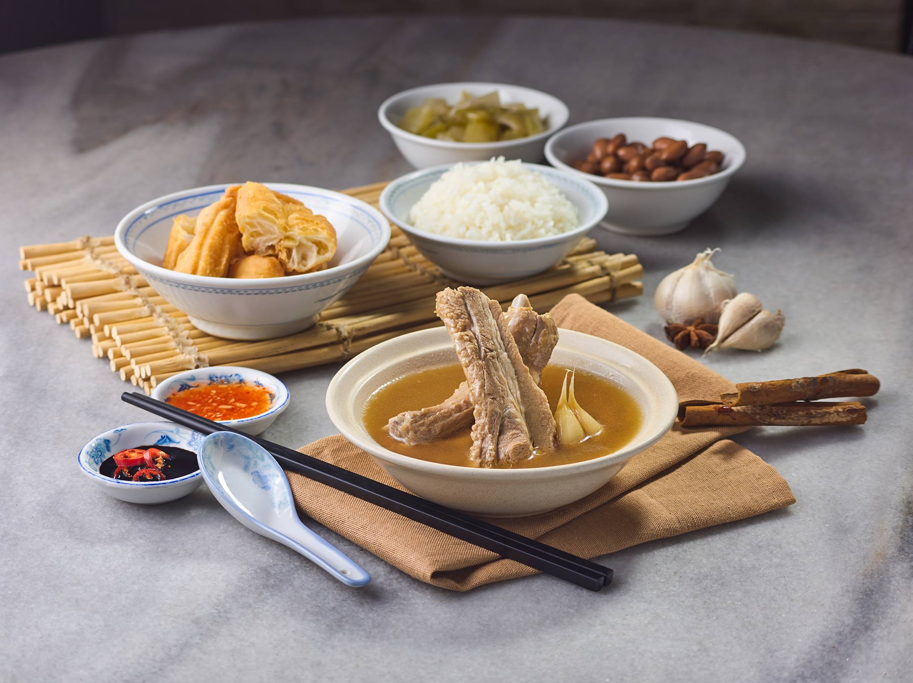

 
新加坡60年老店黃亞細肉骨茶（台北市信義區松高路12號3樓新光三越信義新天地A8 3F店）
飄香一甲子正宗新加坡好味道
黃錫海（小名：黃亞細）先生的父親黃美松先生，是把潮式肉骨茶發揚光大的先驅，早在1950年代，黃美松先生就販賣以新鮮豬排骨熬成的潮州風味肉骨湯（肉骨茶）
1977年年，黃亞細先生從退休的父親手中接棒，開創了黃亞細肉骨茶餐室，至今服務超過一百萬人次的顧客，傳遞這道經典家傳美食的美味，黃亞細的品牌也與新加坡肉骨茶畫上了等號。
飄香一甲子，銷售量超過2000座101大樓的正宗新加坡好味道，值得您來細細品味。
https://www.ngahsio.com/tc/about-us